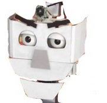
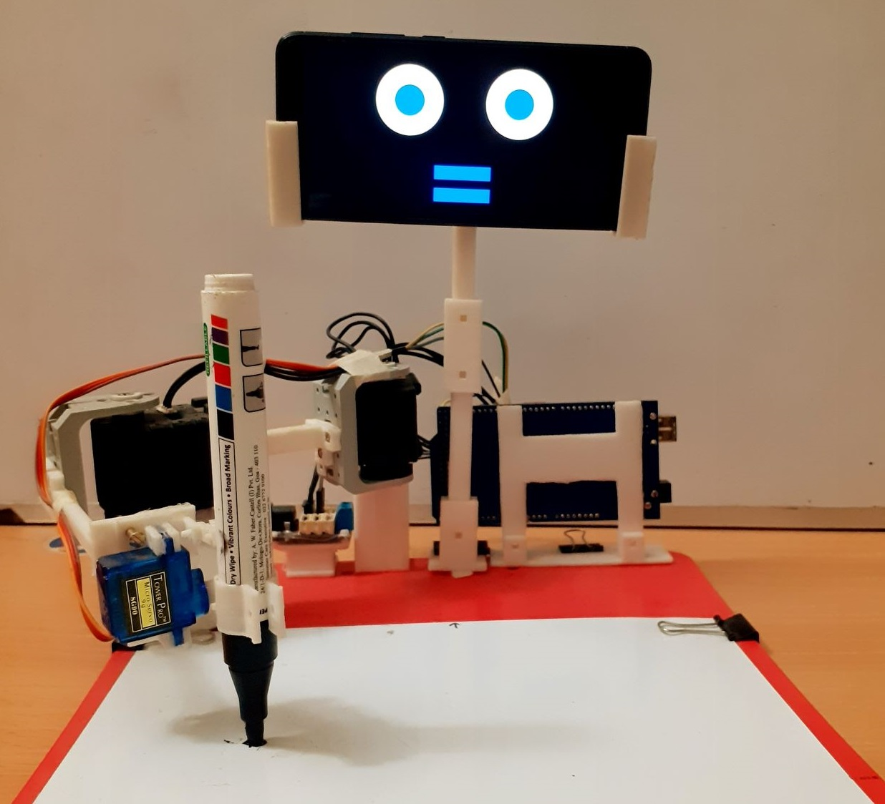
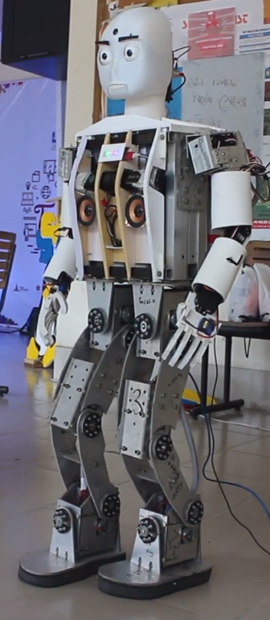
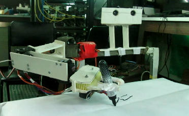
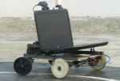
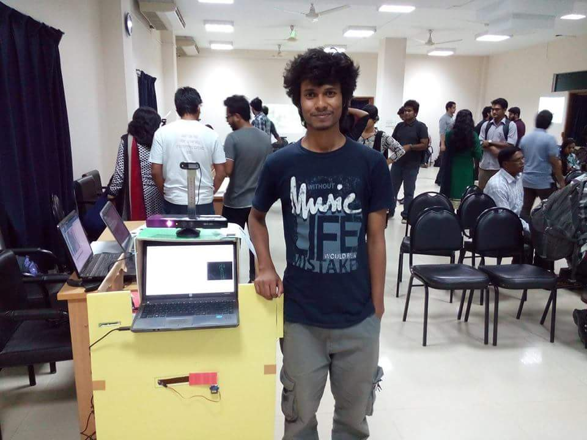
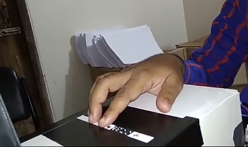
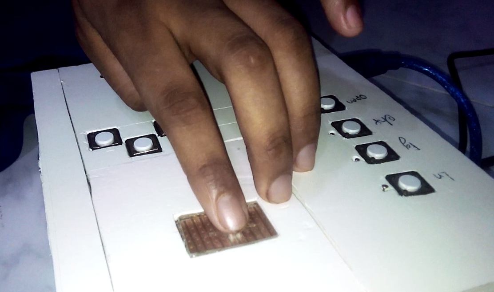

Noushad Sojib
I am currently an assistant professor in the Dept. of CSE at North East University Bangladesh. I have completed B.Sc(Engg.) in Computer Science & Engineering from Shahjalal University of Science and Technology. CVResearch Interests
Intelligent Autonomous Robot | Human Robot Interaction | Reinforcement LearningMy primary research goal is to develop intelligent learning algorithms and dynamic control systems to allow robots maneuvering in the human environment as a human peer, not just a machine that requires to operate.
Awards
- Best Oral Presentation Award at IRCE 2020 for Educational robot Kiddo learns to draw to enhance interactive handwriting scenario for primary school children
- Best Poster Presentation Award at IEEE R10 HTC 2017 for Design and Development of Ribo: a Social Humanoid Robot
- 2nd Runners up at International Robotics Competitions (IRC-2015) , IIT-Bombay
Grants
- Innovation Fund 2016-2017, third round
ICT Division, Bangladesh.
Projects
|
 |
Ribo: a social humanoid robot This robot can make short conversations, respond instantly by turning head towards the caller, and can perform various motion to entertain humans. According to our survey, 64.6% of people showed interest to get this robot home where 80.7% of people agreed that such robots would be suitable for working in home and office environments |
|||||
|
 |
Kiddo: Robot in education Children are easily attracted towards technology. Incorporating exciting technology for example a robot can play an important role in their education. Our goal is to develop a friendly robot such that young children feel comfortable around it and interacting with it enhance their learning. We have first simulated the robot and then developed it and now both are using to implements algorithms to make it a useful educational tool. |
|||||
|
 |
Lee: Bipedal humanoid robot Lee is a 34 DOF life-size humanoid robot. It can recognize voice commands and make short conversations besides its limited walking ability. We have developed separate ROS packages for motor control, trajectory generation, footstep generation, hand motion editor, conversation AI, .etc, and had to heavily patch standard walking algorithms to handle many real-life issues. We also develop drag-and-drop programming like motion editor to generate animatronic motions. |
|||||
|
 |
Sustu: An experimental robot This was an early development of my robotics journey. In the first version, it was able to locate a red ball using the Kinect depth sensor and then try to follow the movement of the user holding the ball. Later, an arm was developed and I tried to do visual servoing. Kinect has near field limitation and LIDAR wasn't available so I build a two-camera stereo set but it didn't perform better than the Kinect. I also developed a simple kinematics solver for the arm to reach defined coordinates. |
|||||
|
 |
Sustusoras Rex: Vision based path following robot This robot has a car like steering mechanism and contains a laptop with a webcam. It detects a white line on a black surface and generates a control signal to keep the robot on the track. |
|||||
|
 |
Prohori: A Smart Biometric Security System for ATM Booth Simple gestures, like a wink, a nod, often remain unnoticed and we turned out these subtle gestures into something special secret password that will activate an alarming system to call rescue team while you are in danger in ATM booth. |
|||||
|
 |
Multicell braille book reader This is a mechanical problem and I had come up with many prototypes before finally inventing a satisfactory single cell module which allows making multicell braille display by placing modules side by side. |
|||||
|
 |
SingleCell braille book reader While digital braille display is a costly one and making is also very complex we developed a simple braille book reader for visually impaired peoples. A single braille cell is really small and contains 6 dots where each needs to individually raise up/ down to represent a character. |
|||||
Selected Publications
-
[IRCE 2020, Best Oral Presentation] Educational robot Kiddo learns to draw to enhance interactive handwriting scenario for primary school children
Tahmina Akter Mispa, Noushad Sojib
International Conference on Intelligent Robotics and Control Engineering (IRCE 2020)
Summery: We have developed an educational robot Kiddo and programmed it to recognize and draw 100 shapes collected from primary school books of grade 1 and grade 2. -
[R10-HTC, 2017, Best poster presentation] Design and development of the social humanoid robot named ribo
Sojib, N., Islam, S., Rupok, M. H., Hasan, S., Amin, M. R., & Iqbal, M. Z.
IEEE Region 10 Humanitarian Technology Conference (R10-HTC), 2017
Summery: A 24 DOF upper torso humanoid robot that becomes most popular in Bangladesh. The ability of responding by turning its head instantly towards the caller is the most popular feature of this social robot. From our research, 80.7% people agreed that such robots are capable of working in home and office environments. -
Summery: On a braille book, a visually-impaired person moves his/her finger from left to right over all the consecutive cells and discern what text it is. Our idea is, the same feelings can be generated if the user puts his/her finger rest over the cell and the cell moves from right to left. We designed the book reader and experimented it with visually impaired people.
Teaching
Courses at NEUB
- CSE 455: Machine Learning
- CSE 451: Neural Networks and Fuzzy Systems
- CSE 411: Artificial Intelligence
- CSE 113: Structured Programming Language
- CSE 211: Object Oriented Programming Language
- CSE 121: Basic Electrical Engineering
- CSE 213: Electronics Device and Circuits
- CSE 221: Digital Logic Design
Workshop
- Basic Hardware Interfacing
- Robot Simulation using VREP
- Robot kinematics and Control